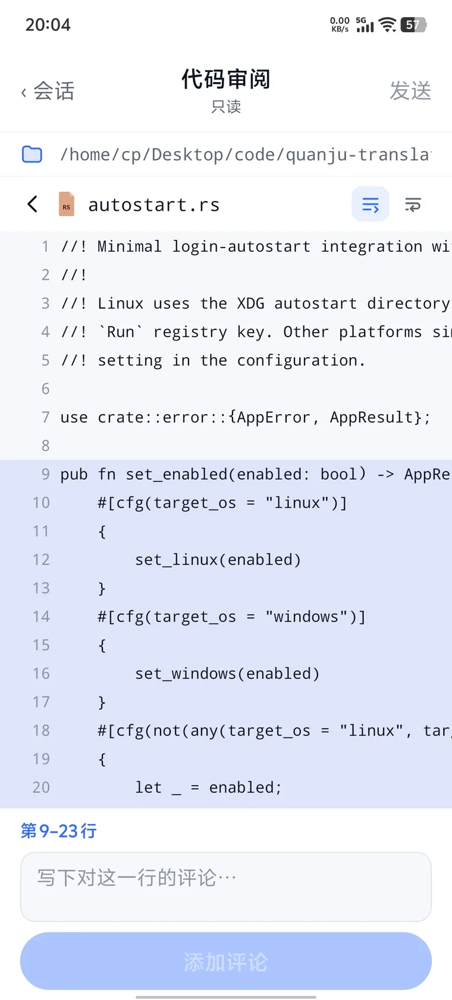

The session stays close
Reasoning, tool calls and queued input are preserved. Keep typing while it runs; the message sends next.
Live output
Queued input
Bottom sheet

ANDROID · OPENCODE REMOTE
Your desktop session keeps running. Pick it up on the phone to read output, switch models, run commands, review code or simply talk.

$ ocremote status listen 0.0.0.0:8787 direct ws://192.168.1.42:8787 relay off opencode online clients 1
Not a shrunken desktop, but a remote session laid out again. Streaming output, commands, review and sync all happen on one screen.
Reasoning, tool calls and queued input are preserved. Keep typing while it runs; the message sends next.
Aligned with the opencode TUI. Terminal-only commands are greyed out instead of pretending to work.
/modelsswitch model/agentsswitch agent/skillsattach to next message/statusview session state/terminalunavailable on phoneSelect a line range and write a comment. Comments merge into one review prompt back in the session.

When another client changes agent or model, the phone updates without a page switch. Deleted sessions return to the empty screen.
agent.selectedbuild → planmodel.selecteddeepseek-v4.1session.deletedempty screenThe host sits next to opencode, the phone drives the session, and the relay only appears when the network needs it.
Runs beside opencode. The password stays local.
$ ocremote status listen 0.0.0.0:8787 direct ws://192.168.1.42:8787 relay off opencode online
Scan, pair and verify the fingerprint.
Optional. Forwards ciphertext for remote networks.
$ ocremote-relay admin status
{
"relayId": "relay_4d5b8c0…",
"v": 2,
"hosts": 0,
"clients": 0
}
opencode keeps listening on 127.0.0.1 only. Phone and host speak Noise NK; the relay sees rooms and timing, not code.
Click any shot to enlarge. Light and dark themes, the sidebar, diffs and line comments all come from the actual client.
Download 0.1.1. Pick the APK for your phone; the host bundle ships Bun and the speech model.
Open the latest release ↗The current APK uses the Expo debug keystore and needs a production keystore before public distribution. Release builds exclude the QA test CA.